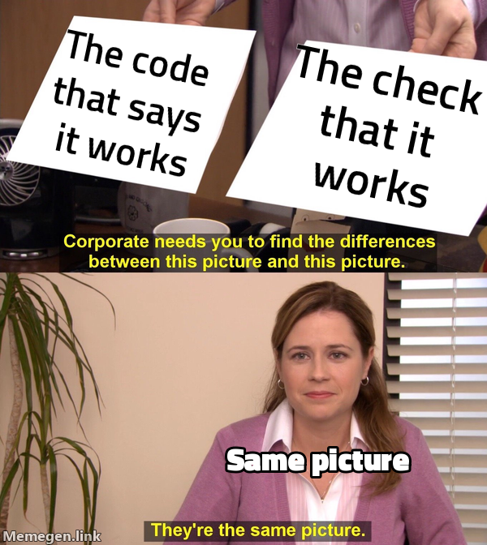

The one picture & the four laws
The organizing idea: the command center is a derived view of the software lifecycle, read along three cuts — lifecycle produces, structure shapes, growth accrues — held together by four laws.
Everything in this suite is downstream of one bet: a project's confidence should be assembled from machine facts, not asserted by whoever is talking. A test either failed on the old code and passes on the new — or it didn't. A commit exists at a SHA — or it doesn't. A human walked the feature on a date — or nobody has. Verification-first is the name for organizing the whole development loop around producing those facts as it goes, so that "is this done?" is answered by reading disk, never by trusting a claim.
01Why the suite is shaped this way
Picture a strong, careful engineer working next to a junior one. The strong engineer double-checks the file path, runs the command before saying it passed, and asks before quietly shipping a cheaper version of the ticket — not because the ticket said to, but because years of habit made those moves automatic. The junior hasn't built those habits yet, and will write "done ✅" after skimming code instead of running it, in total sincerity.
Gabe's skills are run by models of varying strength — sometimes the careful one, sometimes a fast, literal one. The entire suite is the answer to a single observation: the disciplined behavior lived in the strong model's judgment, not in the instructions. So the design goal is always to move judgment out of the model and into files, gates, and derived views — where a weak model inherits the strong model's floor for free, and a strong model can't quietly skip a step either. The E1–E7 contract is the smallest version of that move; the mechanism catalog is the full library; this page is the shape they add up to.
02The one picture
Start with the thing that looks like the product but isn't. The Testing Command Center — the browsable site that shows a project's features, tests, coverage, and releases — is not a thing anyone builds or maintains. It is a derived view of the software lifecycle's execution. Nobody writes its pages; the lifecycle writes them as a byproduct of doing the work. Read that one object along three cuts:
flowchart LR
subgraph PROD["Lifecycle — the producer"]
L["scope · plan · red · execute<br>review · commit · push · walk"]
end
subgraph SHAPE["Structure — the shape"]
S["one subject spine<br>entity × altitude"]
end
subgraph MOT["Growth — the motion"]
G["ship a feature →<br>it walks the spine itself"]
end
L -->|"emits facts as byproducts"| S
S -->|"each view recounts<br>from machine sources"| G- Lifecycle = the producer. The suite's real job is developing software. Every command earns its place by its value to the developer building the thing — never by the docs it emits. The doc points fall out of the beats as byproducts, which is why deleting a command for "authoring no doc" is a category error (see the third law below).
- Structure = the shape. One subject spine — Now · Board · Entities · Docs · Testing · Ledger · Releases — read along two axes: entity (which subject, horizontal) and altitude (docs high, tests low, vertical). Docs and tests are two lenses at the same altitude, meeting at the feature card. Time is an overlay, never a fourth wing.
- Growth = the motion. Ship a feature and it walks the spine by itself: the ticket closes, the commit lands, and every view recounts from the same machine sources. Two clocks run at once — the present is replaced on each refresh, so it can't drift; the past accrues in git, so it's never hand-kept.
03The four laws
These are not style preferences. Each one has been violated in a real session and reverted, which is why they read as hard rules rather than suggestions.
| Law | What it forbids | Why |
|---|---|---|
| 1 · Anti-curation | A count, verdict, or pass/fail that a human typed in. | Machine sources assert every number (git, junit, coverage, PLAN, PENDING); authored artifacts only translate them. A gap is named, never faked green. |
| 2 · Anti-bloat | Storing anything you can derive; any view that needs refresh-discipline. | If it can be recomputed from git and the corpus, it is recomputed — never saved. Deriving narrative from git is the exception: that's fabrication, not projection, and is forbidden too. |
| 3 · The Standing Correction | Judging a command by whether it emits a doc artifact. | A prior pass deleted /gabe-execute for "authoring no doc" — the canonical error. A command is justified by its value to the build, full stop. |
| 4 · Block lies, warn debts | A harness that blocks honest incompleteness, or lets a dishonest state through. | Hooks block a dishonest state — a ✅ whose proof doesn't exist on disk. Everything else — thin coverage, un-walked stations, absent angles — is reported, never blocked. This is decision D7; the walk witness is D2. |

The suite is allowed to add verification, never ceremony. The standing test: if a verification beat ever prints a summary a developer reads instead of producing a failure a developer must fix, it has become theatre — delete it. /gabe-red carries this tripwire explicitly.
04Where this lands in the loop
The abstract model becomes concrete at three specific beats, each of which has its own page:
- /gabe-red puts the failing test on the record before any source is written — the beat that finally made test-first land, and the one that produces "ever-red" honesty.
- The C-id scheme gives every test a durable identity so a claim of coverage can be checked, recovered, and counted mechanically.
- The command center is the derived view itself — the eight sections, the two clocks, and how a shipped feature walks the spine (with an interactive map of the whole nav → files → commands chain).
If you're here to understand why the gates exist at all, read Why weak models drift (the incident corpus) and the mechanism catalog (the fixes). If you're here to understand how the loop runs day to day, read The development loop and Beats & commands. The rulings that fixed this architecture — including block-lies-warn-debts — are on Design decisions.